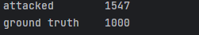

Project Overview
Sponsored by the Purdue School of Industrial Engineering, I worked in a team of five to develop a model
for detecting cyberattacks in sensor data from automated vehicles. Our goals were minimal runtime and at least
90% accuracy on test data. We processed a large dataset and successfully built a model that met our expectations.
Initial Dataset Description
The dataset consists of multiple CSV files, each containing localization sensor features. Each file represents
vehicle trajectory data over time. The dataset includes:
- "Ground truth" trajectories (unaltered vehicle movement data).
- Attacked trajectories (generated using the "FusionRipper" algorithm with different parameters).
Across eight routes, between 200-300 attack trajectories were generated from their respective ground truths.
The dataset was derived from the Complex Urban Dataset.
Dataset structure visualization:
Dataset Attributes (28 features)
- time: Timestamp (seconds per row).
- x, y, z: Longitude, latitude (radians), and height (meters).
- utm_x, utm_y: Coordinates in UTM format.
- ve, vn, vu: Velocity in east, north, and up directions (m/s).
- pitch, roll, yaw: Vehicle orientation (Euler angles in radians).
- qbn_0, qbn_1, qbn_2, qbn_3: Orientation represented as a quaternion.
- init_align: Initial vehicle heading.
- Standard deviations: Position, velocity, and orientation (x_sd, y_sd, yaw_sd, etc.).
Statistical summary of the dataset:
Data Preparation
To simplify the dataset, we aggregated each CSV using mean values, reducing the dataset from over a million
entries to 2,546 rows. We combined attack and ground truth data, labeled them, and used XGBoost's feature
importance to retain only eight key features:
- vx_sd, z_sd: Standard deviations of x and z positions.
- ve, vu: Velocity in the east and up directions.
- pitch, roll, yaw: Euler angle-based vehicle orientation.
- qbn_3: Quaternion component representing vehicle orientation.
Final dataset statistical summary:

Modeling
We tested logistic regression, support vector machines, and XGBoost. Initially, XGBoost yielded unexpectedly
high test metrics, leading us to investigate class imbalance.

To address this, we bootstrapped additional ground truth samples. After balancing, the dataset showed
improved performance.

Model performance after balancing:

Findings and Performance Evaluation

The optimized XGBoost model successfully identified anomalies, achieving all metrics above 0.9, meeting
our performance goal. The most impactful features in identifying cyberattacks were:
- Velocity standard deviations (vx_sd, z_sd)
- Velocity in the east and up directions (ve, vu)
- Vehicle orientation features (roll, qbn_3)
Future Work
Potential improvements include expanding the dataset with more real-world ground truth trajectories, reducing
reliance on bootstrapping for class balancing.
Project Takeaways
This project reinforced my skills in data cleaning, modeling, and handling unstructured datasets.
I also gained experience in directing team efforts, designing modeling approaches, and using XGBoost for classification.